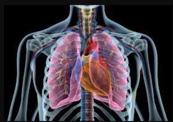

How Lungs Work
Lungs are part of the respiratory system, a group of organs and tissues that work together to help you breathe.
Why Are Lungs Important?
Every cell in your body needs oxygen to live. The air we breathe contains oxygen and other gases. The respiratory system's main job is to move fresh air into your body while removing waste gases. Once in the lungs, oxygen is moved into the bloodstream and carried through your body. At each cell in your body, oxygen is exchanged for a waste gas called carbon dioxide. Your bloodstream then carries this waste gas back to the lungs where it is removed from the bloodstream and then exhaled.Your lungs and respiratory system automatically perform this vital process, called gas exchange. In addition to gas exchange, your respiratory system performs other roles important to breathing. These include: Bringing air to the proper body temperature and moisturizing it to the right humidity level. Protecting your body from harmful substances. This is done by coughing, sneezing, filtering or swallowing them. Supporting your sense of smell.
The Parts of the Respiratory System and How They Work Airways
* SINUSES are hollow spaces in the bones of your head above and below your eyes that are connected to your nose by small openings. Sinuses help regulate the temperature and humidity of inhaled air. * The NOSE is the preferred entrance for outside air into the respiratory system. The hairs lining the nose's wall are part of the air-cleaning system. * Air also enters through the MOUTH, especially for those who have a mouth-breathing habit, whose nasal passages may be temporarily blocked by a cold, or during heavy exercise. * The THROAT collects incoming air from your nose and mouth then passes it down to the windpipe (trachea). * The WINDPIPE (trachea) is the passage leading from your throat to your lungs. * The windpipe divides into the two main BRONCHIAL TUBES, one for each lung, which divides again into each lobe of your lungs. These, in turn, split further into bronchioles.
Lungs and Blood Vessels
Your right lung is divided into three LOBES, or sections. Each lobe is like a balloon filled with sponge-like tissue. Air moves in and out through one opening—a branch of the bronchial tube. Your left lung is divided into two LOBES. The PLEURA are the two membranes, actually, one continuous one folded on itself, that surround each lobe of the lungs and separate your lungs from your chest wall. Your bronchial tubes are lined with CILIA (like very small hairs) that move like waves. This motion carries MUCUS (sticky phlegm or liquid) upward and out into your throat, where it is either coughed up or swallowed. Mucus catches and holds much of the dust, germs, and other unwanted matter that has invaded your lungs. You get rid of this matter when you cough, sneeze, clear your throat or swallow. The smallest branches of the bronchial tubes are called BRONCHIOLES, at the end of which are the air sacs or alveoli. ALVEOLI are the very small air sacs where the exchange of oxygen and carbon dioxide takes place. CAPILLARIES are blood vessels in the walls of the alveoli. Blood passes through the capillaries, entering through your PULMONARY ARTERY and leaving via your PULMONARY VEIN. While in the capillaries, blood gives off carbon dioxide through the capillary wall into the alveoli and takes up oxygen from air in the alveoli.
Muscles and Bones
Your DIAPHRAGM is the strong wall of muscle that separates your chest cavity from the abdominal cavity. By moving downward, it creates suction in the chest, drawing in air and expanding the lungs. RIBS are bones that support and protect your chest cavity. They move slightly to help your lungs expand and contract.
Keeping Lungs Healthy
Lung capacity declines as you age. Keep your lungs healthy by taking good care of yourself every day. Eat a balanced diet, exercise and reduce stress to breathe easier. Get more tips for healthy lungs. Return to previous page